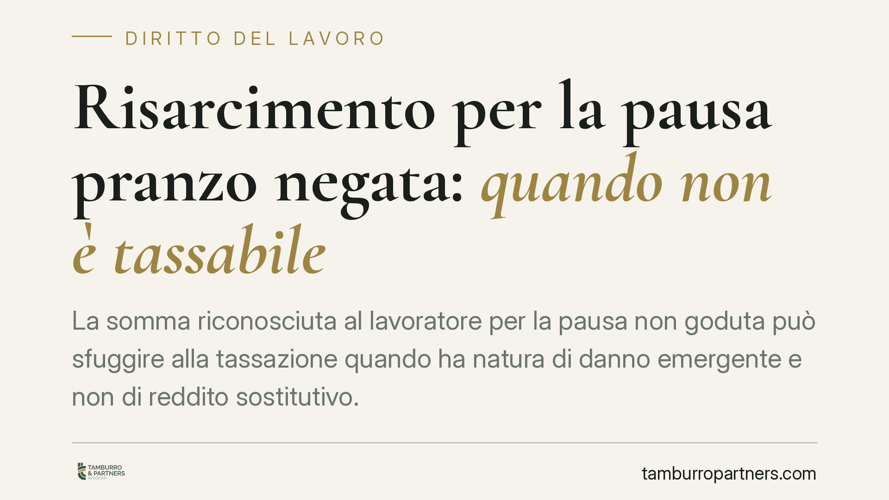

Risarcimento per la pausa pranzo negata: quando non è tassabile
La somma riconosciuta al lavoratore per la pausa non goduta può sfuggire alla tassazione quando ha natura di danno emergente e non di reddito sostitutivo. La distinzione, tutt'altro che formale, incide sulle ritenute in busta paga, sui conguagli e sui possibili recuperi. Vediamo il quadro normativo e le cautele operative per datori, consulenti e dipendenti.

Il caso e perché conta
Quando l'orario giornaliero supera le sei ore, il lavoratore ha diritto a una pausa di almeno dieci minuti (art. 8, D.Lgs. 66/2003), finalizzata al recupero delle energie psicofisiche e alla consumazione del pasto. Se la pausa non viene concessa, al dipendente può essere riconosciuta una somma a ristoro del disagio subìto.
Da qui la domanda pratica: questa somma va tassata come reddito di lavoro dipendente, oppure è esente perché risarcitoria? La risposta non è automatica e dipende dalla funzione concreta dell'erogazione.
Inquadramento normativo
Il principio guida è contenuto nell'art. 6, comma 2, del Tuir (D.P.R. 917/1986): i proventi conseguiti in sostituzione di redditi, comprese le somme percepite a titolo di risarcimento per la perdita di redditi, costituiscono redditi della stessa categoria di quelli sostituiti o perduti. La norma tassa quindi il lucro cessante, cioè il mancato guadagno.
Specularmente, resta fuori dall'imponibile il danno emergente: la somma che reintegra una perdita patrimoniale o compensa un pregiudizio non retributivo non è reddito, perché non sostituisce alcun guadagno mancato. Per i redditi di lavoro dipendente il perimetro dell'imponibile è tracciato dall'art. 51 Tuir, che include tutte le somme e i valori percepiti in relazione al rapporto: anche qui la chiave resta la natura dell'erogazione.
La distinzione danno emergente/lucro cessante è consolidata nella prassi dell'Agenzia delle Entrate in tema di somme corrisposte in occasione della cessazione o dello svolgimento del rapporto. Prima di applicarla al singolo caso, va verificata l'esistenza e la pertinenza di uno specifico documento di prassi: in assenza di un atto puntuale sulla pausa pranzo, l'esenzione va argomentata direttamente sull'art. 6 Tuir e sulla causale effettiva della somma, non su un generico "chiarimento".
La causale reale prevale sull'etichetta
Il punto decisivo non è come la voce è denominata in busta paga, ma quale funzione svolge in concreto. Se la somma reintegra il pregiudizio per il mancato riposo — un danno alla persona o comunque non retributivo — ha natura di danno emergente e resta fuori dal reddito imponibile. Se invece remunera prestazioni aggiuntive o compensa un mancato guadagno, torna a essere reddito tassabile ai sensi degli artt. 51 e 6, comma 2, Tuir.
La qualificazione, dunque, va ricostruita sul titolo dell'obbligazione: sentenza, verbale di conciliazione, accordo transattivo. Una causale ambigua espone a contestazioni in entrambe le direzioni.
Il profilo contributivo, spesso trascurato
All'analisi fiscale va affiancata quella previdenziale. La base imponibile contributiva è definita dall'art. 12 della L. 153/1969, che àncora la retribuzione imponibile a tutto ciò che il lavoratore percepisce in dipendenza del rapporto. Il criterio non coincide sempre con quello fiscale, ma segue una logica affine: le somme prive di natura retributiva, perché meramente risarcitorie di un danno, non concorrono di regola alla base contributiva.
Anche qui la valutazione è caso per caso. Trattare come esente ai fini contributivi una somma che invece ha natura retributiva espone il datore a recuperi INPS e sanzioni; la simmetria tra profilo fiscale e previdenziale va quindi verificata, non presunta.
Implicazioni pratiche
Per il datore e il consulente del lavoro: la corretta qualificazione incide su ritenute d'acconto, contribuzione e conguagli. Una gestione errata genera versamenti in eccesso o, al contrario, il rischio di accertamenti.
Per il dipendente: se somme di natura risarcitoria sono state assoggettate a tassazione, può esserci spazio per il recupero delle imposte versate in eccesso, nei limiti temporali di legge.
Cosa fare in concreto
- Ricostruite la causale reale della somma dal titolo (sentenza, transazione, verbale), non dalla dicitura in busta paga.
- Distinguete la componente risarcitoria (danno emergente, potenzialmente non imponibile) da quella sostitutiva di redditi (lucro cessante, tassabile).
- Coordinate fisco e contributi: valutate separatamente imponibilità ex Tuir e base contributiva ex art. 12 L. 153/1969.
- Verificate l'esistenza di prassi specifica dell'Agenzia sul punto prima di applicare l'esenzione; in mancanza, motivate sull'art. 6 Tuir.
- Rivedete i conguagli passati per individuare eventuali imposte versate in eccesso e valutare istanze di rimborso nei termini.
Ogni storia di lavoro ha i suoi tempi.
Se gestisci HR e vuoi un confronto su contenzioso, ispezioni o licenziamenti, scrivi allo studio. Ti rispondiamo entro un giorno lavorativo.